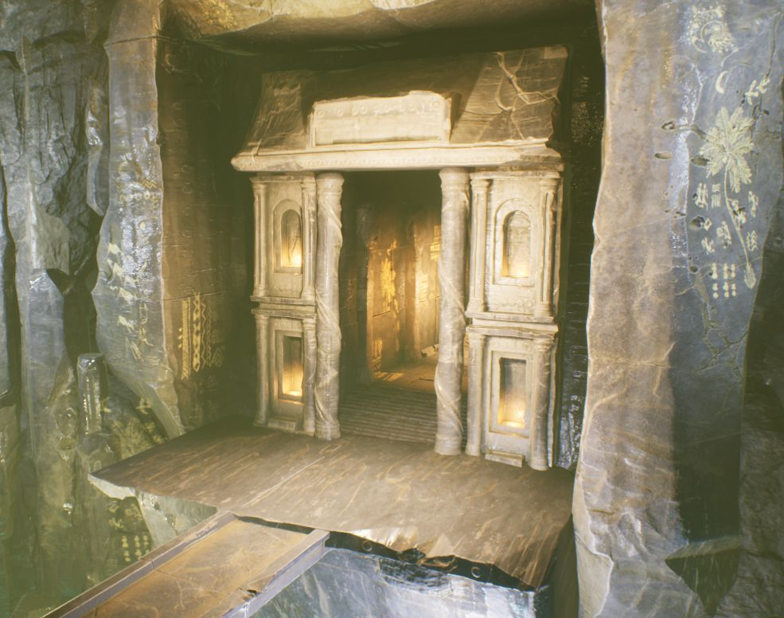

Fantasy Action
시연 영상 Gameplay Video

YouTube에서 시연 영상 보기 ↗프로젝트 개요 Overview
AI 전투
- 보스와 몬스터가 서로 상호작용하며 함께 싸우는 군집형 AI 전투
- 던전을 탐험해 모든 적을 섬멸하고 아이템을 얻는 쟁취감
연출
- 시네마틱 툴로 카메라 무빙과 카메라 셰이크를 조합
- 치명타, 피니시 무브 등 결정적인 장면에 일시적인 슬로우 모션을 적용해 몰입도 상승
아웃게임 & 인게임 사이클
- L_MainMenu
게임 실행 후 Start / Exit 선택 - L_GameMap1
던전 탐험, 몬스터·보스 전투 - 다음 포탈
클리어하면 다음 맵으로 이동 - L_GameMap2
마지막 전투 후 Clear
캐릭터 클래스 구조 Character Class
플레이어와 적이 공유하는 전투·UI·스탯 처리는 JBaseCharacter에 모으고, 각자에게만 필요한 기능은 파생 클래스에서 구현했습니다.
공통 (JBaseCharacter)
- Combat: 무기, 트레이스, 히트 처리
- UI: HP 수치 처리
- Stat: 난이도에 따른 Base Stat 처리
차이점
- Player: 카메라 컴포넌트, LockOn 시스템
- Enemy: 무기 공격 외에 좌/우 맨손(UnArmed) 공격 콜리전 추가, 아군/적군 구분 처리
캐릭터 컴포넌트 구조 Components
JBaseCharacter는 IAbilitySystemInterface, IPawnCombatInterface, IPawnUIInterface를 구현하고, 역할별로 나눈 네 개의 컴포넌트에 기능을 맡깁니다.
AbilitySystemComponent
액터와 GAS를 잇는 다리이자, GA와 여러 작업을 관리하는 중앙 처리 장치입니다. (이하 ASC)
- Ability(어빌리티) 관리
- Attribute(스탯) 관리
- Gameplay Effect(버프/디버프) 관리
- Gameplay Tag(상태/분류) 관리
캐릭터 액션이 발동되면 종류에 따라 주변 또는 자신에게 영향을 주고, Attribute Set 값을 변경합니다.
PawnCombatComponent
캐릭터의 전투 정보를 모두 관리합니다.
- 무기 장착/해제 관리
- 애니메이션 몽타주 트레이스 처리
- 캐릭터 Hit 처리
- 무기 공격과 맨손 공격을 구분해 처리
Player: TArray<AActor*>로 한 번의 공격에 여러 대상을 처리.
Enemy: 무기 또는 좌/우 맨손에 따른 Hit 처리(아군 구분), Block·Roll 상태면 GameplayTag로 데미지 미적용.
PawnUIComponent
캐릭터 UI에 쓰이는 수치를 관리하고 HUD에 반영합니다.
- HP, RP(Rage), SP(Stamina) 등 주요 수치 변경 전달
- HP 게이지, 스킬 아이콘 등 HUD 요소 갱신
MotionWarpingComponent
루트 모션이 타겟과 맞도록 캐릭터 위치를 동적으로 보정하는 UE5 기능입니다.
- 루트 모션 재생 중인 캐릭터를 특정 위치로 이동
- 애니메이션 몽타주의 노티파이 또는 블루프린트에서 사용
Motion Warping 플러그인을 활성화하고 Build.cs에 "MotionWarping" 모듈을 추가해 사용했습니다.
애니메이션 구조 Linked Anim Layers
구성
UAnimInstance→UBaseAnimInstance→UCharacterAnimInstance→UPlayerAnimInstanceABP_Player는UPlayerAnimInstance를 부모로 하고,ALI_Player인터페이스로 레이어를 연결합니다.ALI_Player: ArmedLocomotionState, Default_Locomotion, Directional_Locomotion- 무기별 레이어(
ABP_AxeLinkedAnimLayer등)는ABP_MasterLinkedAnimLayer를 상속해 무기 장착에 따라 교체됩니다.
AI & EQS Enemy AI
AI Perception
AI 컨트롤러(AIC_Guardian)에 AI Perception 컴포넌트를 추가해 몬스터가 시야 센서(AISense_Sight, 시야 반경 1500cm)로 플레이어를 감지합니다.
Behavior Tree
플레이어와의 거리를 판단해 접근, 공격, 회피를 선택합니다.
Service
BTService_GetDistToTarget가 타겟과의 거리를 감지해 Blackboard 조건을 갱신하고, BTService_UpdateMotionWarpAttackTarget이 공격 시 모션 워핑 타겟을 갱신합니다.
Task
BTTask_ActivateAbilityByTag로 GAS 어빌리티를 실행합니다. 거리가 350 미만이면 Enemy.Ability.Melee로 공격하고, 플레이어를 감지하면 해당 위치로 이동합니다.
EQS (Environment Query System)
AI가 주변 환경에 맞춰 가장 좋은 위치를 고르도록 했습니다. 타겟을 중심으로 무작위 반경의 원형 대형을 만들고, 한 번의 쿼리에서 최대 12개 지점을 네비메시 위에서만 생성합니다.
필터 조건
- PathExist: AI가 실제로 갈 수 있는 경로가 없으면 지점을 버림
- Dot 2D: AI 전방 각도 안의 지점만 선호 (최대 0.45, 약 63°)
- Distance: TargetActor와 최소 480 이상 떨어진 지점만 통과
시네마틱 & 카메라 연출 Sequencer
CineCameraActor로 영화 같은 화면 구도를 만들었습니다.- Crane 없이 Transform 트랙만으로 시작점부터 종료 지점까지 카메라 위치를 조정했습니다.
CameraShake_FrostGiantRoar로 보스 포효 순간의 흔들림을 구현했습니다.- 보스 등장 컷신은 블루프린트에서
Create Level Sequence Player→Play로 재생합니다.
UI HUD
① PlayerUIComponent
HP, RP, SP와 무기 장착에 델리게이트로 연결해 스탯 게이지와 무기 스킬 정보를 표시합니다.
② EnemyUIComponent
HP에 연결해 적과 보스의 체력 게이지를 표시합니다.